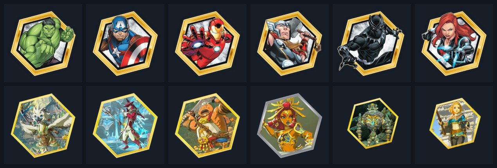

It turns out that's most of the job. I write software for machines, make the art and sound that runs on them, build websites for people who need one, and fix whatever is in the way.
Anything in the house I could get a screwdriver into. Some of it went back together.
Out of high school I worked in a warehouse and on event setups, and did the desktop and hardware support on the side. Then a brewery, where I led shifts on the floor and also shot the photos and video and ran the social media.
In 2023 I went to work for a business owner with several companies. The title was assistant. The job turned into running a product line, writing game software and making the art and sound that goes with it, because those things needed doing and I could learn them. I didn't plan it that way. I kept saying yes to the next thing.
The code came last. I'd been inside enough machines by then that software felt like one more panel to open.
Photo of the workbench
3:2 · printers, tools out, whatever's open on the bench
Where most of this gets made.
Wide photo: the shop
21:9 · edge to edge · the printers and a machine with the glass off, or the bench from across the room
The garage shop where the machines, the mods and most of the code get built.
What I've built
Three in detail, then the rest.

Turning Stern's Avengers machine into Tears of the Kingdom, one file at a time
The working folder for this is 21,143 files, most of them audio. I pull the originals out with Pinball Browser, sort them into scenes, and replace them with new art, video and sound. Two of the six characters are on the machine so far, and the other four are ready to upload.
Pinball Browser, Photoshop, Premiere Pro, After Effects
An original game for the Multimorphic P3, now in beta
The P3 is a pinball machine with a screen for a playfield. I wrote a new game for it: an elimination game for two to sixteen players, with the rules, the hardware integration, two displays, and its own 25 voice lines, 9 effects and 4 music tracks. The first playtest on the machine was August 2026.
Dan repairs pinball machines around Richmond. He had a Google Sites page and wanted more local customers. I redesigned the site, wrote the copy around Henrico, Chesterfield and Ashland, set up his Google Business Profile, and put it on his own domain. It's live and I maintain it monthly.
Single-page site with a request form for a home improvement contractor. Built December 2025, updated August 2026.
Live
Donutland
A 3D-printed pinball mods line I run for the Glaser Group, from CAD and print tuning to photos, listings and install guides. The Pindow, a lit display window that fits a machine's bill acceptor slot. Slingshot plastics for Jersey Jack's Sonic. Charms and DMD lightboxes. Plus Donutland Amusements, which buys machines, mods them, and places them at a Richmond venue.
Shipping
Clawtopia, Bookend Creative, Eclipse Pinball
Three more client sites: Bookend Creative in React and Vite, Clawtopia as a static rebuild, and Eclipse Pinball.
Built, not launched
Retheme asset manager
A web app for keeping scenes, video and audio straight across retheme projects. I built it because I needed it.
Prototype
3D scanning and remodelling
Playfield parts scanned on a Revopoint MetroX and remodelled as printable files: Elvira skulls, trophies, ball guides, targets.
Ongoing
Smaller software
Holy Poker, an Electron app. counter-tv, a Python package. A Discord rich-presence tool.
Built
The other two jobs
The work that doesn't fit on a project list.
Being someone's second brain
Since 2023 I've run the day-to-day for a business owner with several companies. The calendar, travel, purchasing and vendors are the visible part. The bigger part is noticing what's slowing him down and getting rid of it: a workflow that needed rebuilding, or an AI tool set up so it saves him time instead of adding a step. The short version is that I'm his second brain.
Photo: at work
3:2 · desk, laptop, notebook · optional
House calls
I also make house calls for tech help. Most people don't have anyone to ask. They get a fake virus pop-up and don't know if it's real. Their printer stopped and nobody they know can tell them why. I come over, fix it, and explain what happened in plain words so it's less scary next time.
I'm good at this and I like it. The look on someone's face when the thing they've been dreading turns out to be a quick fix is a good reason to drive across town.
Photo: on a house call
3:2 · with a client if they're willing · otherwise a kitchen table and a laptop
Second brain for the owner of several businesses: workflows rebuilt, recurring work automated, AI productivity tools put into daily use, plus calendar, travel, purchasing and vendors. In the same role I run Donutland, a 3D-printed pinball mods line and a route of machines at a Richmond venue, build custom pinball machines, modify Stern Spike 2 and SAM game software, and wrote an original game for the Multimorphic P3 in C# and Unity that is now in beta on the hardware.
to present
Freelance Technical Consultant and Developer
Self-employed, Richmond, VA
Websites for small businesses, from first mockup through launch, with local SEO, Google Business Profile setup and monthly maintenance. Five built so far, two live. In-home tech help for people who need someone patient to explain what happened and fix it.
to
Marketing Coordinator and Lead Server
Origin Beer Lab and Center of the Universe Brewing, Ashland, VA
Social media, photo and video content, event promotion and logistics for two connected locations, and lead shifts on the floor.
to
Operations Assistant
T&B Equipment / InProduction, Ashland, VA
Warehouse inventory, data entry, event scaffolding and setup, and desktop and hardware support for office and field staff.